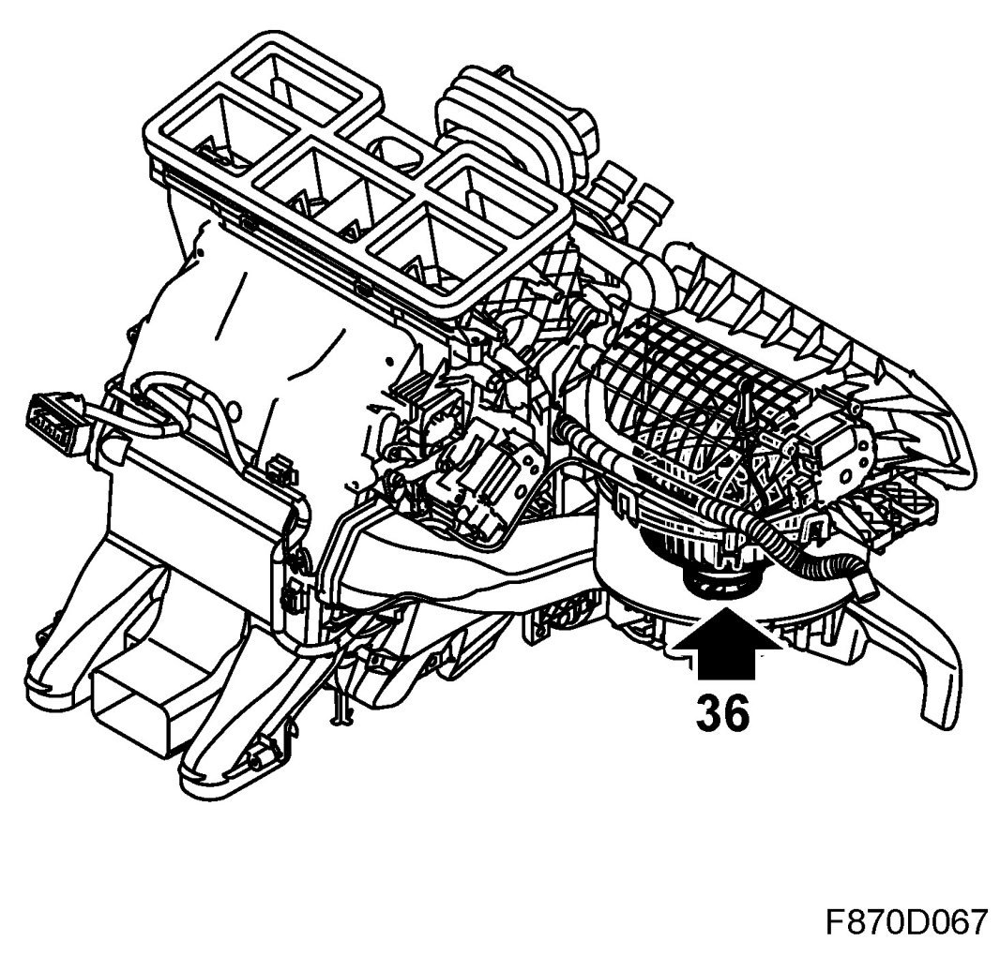
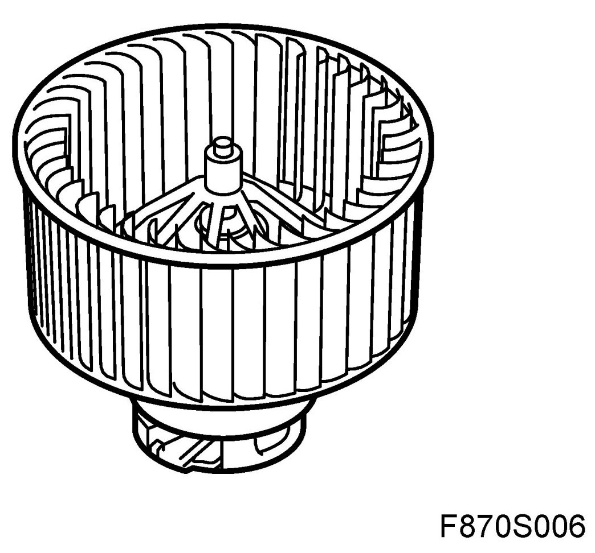
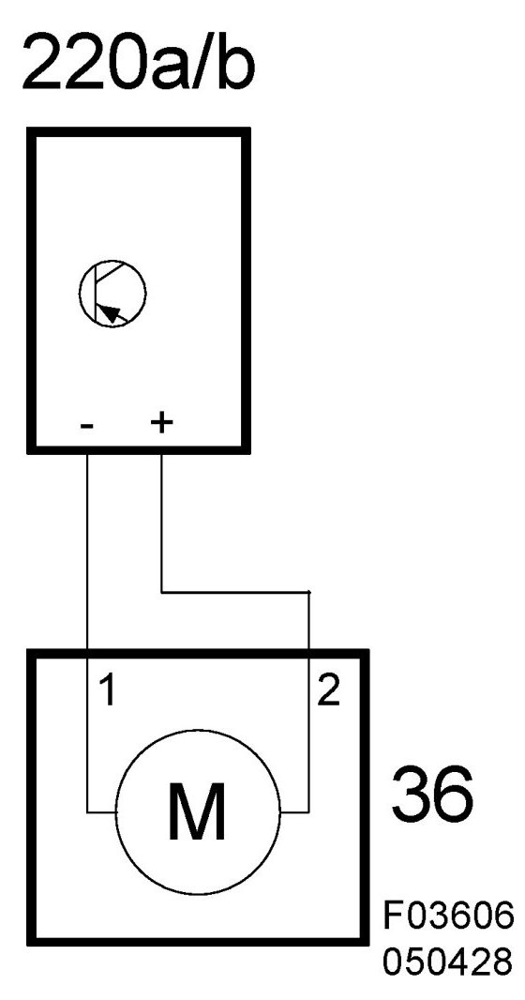

Blower Motor: Description and Operation
Motor, Ventilation Fan (36), ACC
Location
Motor, ventilation fan (36)
Main task
The ventilation fan provides the cabin interior with air from outside the car or inside the cabin depending on the position selected for the air recirculation flap.

Type
Direct current motor.

Connect
The ventilation fan motor is connected to the corresponding fan control unit.
ACC
The fan control unit contains two connectors; a four-pin connector connected to the ACC unit and a two-pin connector which is directly-connected on the ventilation fan motor. Four-pin connector: control unit B+ feed to pin 4 from fuse 23 (fuse board 22) and is connected to ground through pin 1 on grounding point G41.

Fan speed is controlled from ACC unit pin 10 through control unit pin 3 with a 2 kHz PWM. Fan control unit pin 2 is connected to ACC unit pin 1 with a return feed for diagnostics information. The control unit sends a 2 kHz PWM to the corresponding fan speed input. If a fault is detected, the control unit sends the indicated pulse ratio and the ACC unit generates the relevant DTC.